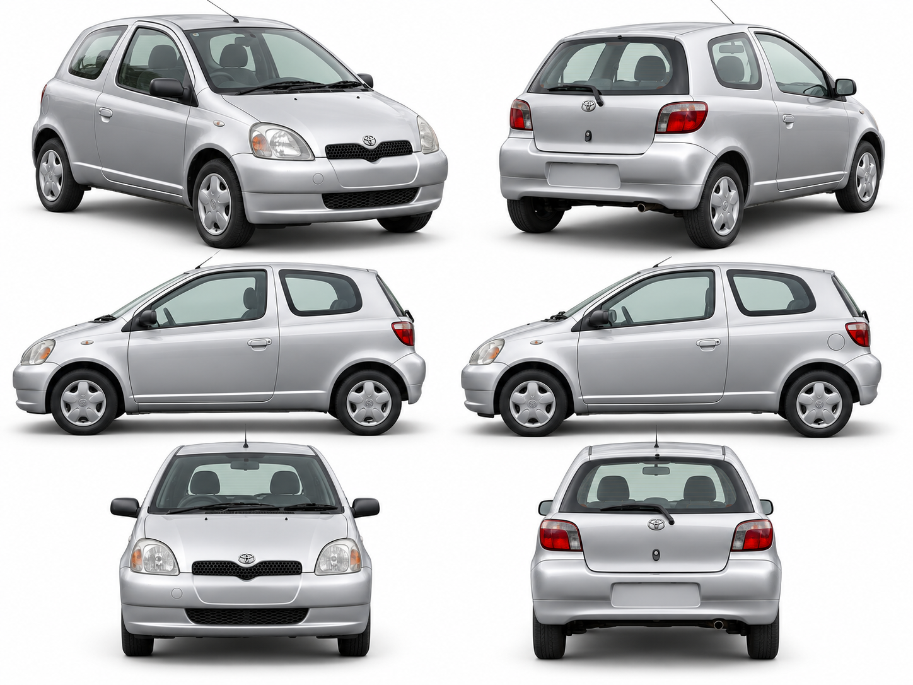
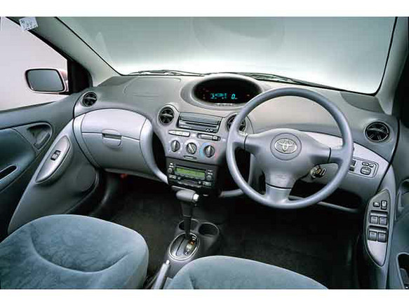

THE ORIGINAL LITTLE BOUNCER
一点银色，一点弹性。
REFERENCE BOARD


右舵、中置仪表与灰蓝座椅；按照片重建车厢布局。
本车为依据参考制作的三维近似模型。外形采用一致的三门结构；原图中有一张反向侧视，未照搬其矛盾细节。尺寸依据 丰田 1999 年发布资料 ↗。
动力部分参考 初代 Vitz RS 的 1NZ-FE ↗ 与 实车机舱照片 ↗；保留当前车身与自动挡内饰。底盘、机舱视角暂时隐藏车壳，选择普通视角即可恢复。
织物、手刹与三门后排侧围参考 丰田初代 Yaris 内饰图库 ↗；后座分区和带扣补充参考 初代 Vitz 后排照片 ↗。后排座舱视角可直接查看座椅与内衬。